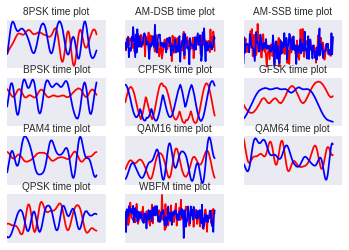
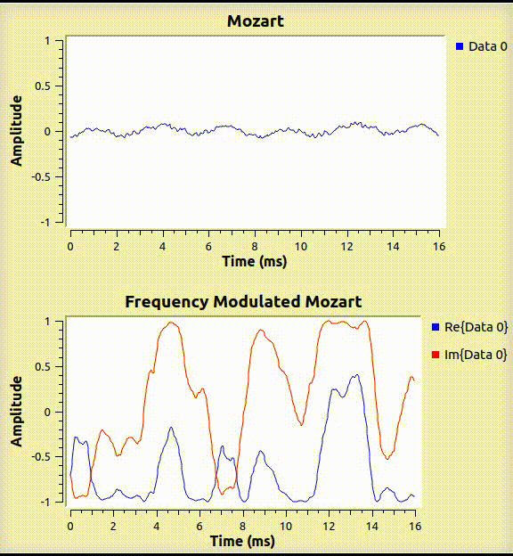
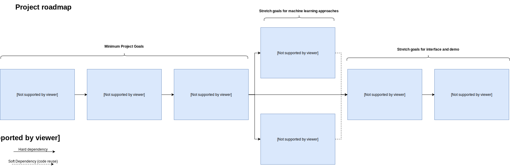

CSC219 Project Proposal
Steven Mackey
Introduction and Background
The term software defined radios (SDRs) traces its origins back to the 1970’s in the US Defense Industry. The general
purpose of SDRs is simply to collect radio data and digitize it so that further processing can be done on General
Purpose Processors (GPPs). Processing on GPPs as opposed to analogue circuits allows for greater flexibility and agility
in adapting to and deploying new radio protocols and techniques for signal processing.
One very important application of SDRs is signal classification; that is, given you have detected an unknown signal in
the environment, determine what type of modulation it is using (familiar modulations being AM and FM), so that you can
demodulate to the original data/signal being broadcast (audio, digital data, etc). While this does have uses in the
civilian sector, this is incredibly valuable for military applications.
The Problem (Signal Characterization)

A visualization of different signal types (from deepsig.io[1])

What an audio signal looks like, and what the same signal looks like when Frequency Modulated (What your car radio is processing)
In the past, signal characterization relied heavily on “carefully hand-
crafted specialized feature extractors for specific signal types”; that is to say Subject Matter Experts (SMEs) in the
field of Digital Signal Processing (DSP) creating often complicated and inflexible algorithms for determining very
specific signal types. In more familiar terms, this is akin to writing mathematical algorithms to determine handwriting.
The handcrafted algorithms currently in use in the field of signal characterization perform well, but are stove-piped
to the signals that they are designed to classify. Again, in terms of hand-writing, it would be as if a classifier would
only be suitable for the english alphabet, but not for other character systems like Japanese Kanji or Arabic script.
This means that when an unknown signal is identified in the environment, there is a huge turn around time
in designing a classifier for it. Often the turn around time is so long that by the time the classifier is fielded, it is
no longer relevant.
Proposed Solution
Neural networks are an obvious solution to this problem. They have the capability of being trained against arbitrary data,
given that the data is labeled. This flexibility makes neural networks an ideal candidate for replacing the stove-piped
algorithms in use today.
There are many approaches that I would like to explore, but given the time constraints of the project, I have broken them down
into a roadmap of dependencies. The first 3 phases are the minimum goals for the project, with the rest being stretch goals.
Some stretch goals may not be feasible given time constraints or may not make sense as I explore the problem further.
Unexepected difficulties may push some approaches back in the road map and some approaches may prove more
useful, so that the project roadmap will need to adjust. I will explain in detail in the next section.
Datasets
A rich dataset of heavily-vetted radio signal samples is freely available at https://www.deepsig.io/datasets
"A dataset which includes both synthetic simulated channel effects and over-the-air recordings of 24 digital and analog
modulation types which has been heavily validated." ... "2 million examples, each 1024 samples long."
Milestones

Phase 1
Download a set of labeled radio data (freely available from https://www.deepsig.io/). Using TensorFlow, train a classifer against a subset of those
using just the raw radio data (no other features) as the input of the model. This is a minimal proof of concept, to show that the approach
is feasible.
Phase 2
Expand the subset of signal types, evaluate the performance of the classifier against a varied set of signals. I have a suspicion that a single
classifer will not do as well when the signal types are wildly different. In terms of handwriting, it would be similar to a a single model
being used for very different character systems (Kanji and English). Evaluate how well specially trained classifiers do when compared to a generic classifier.
Phase 3
Implement an algorithm to calculate a finger print of the input signal, and train a classifier against that.
- A coworker of mine is advising a group at CSUS in their senior project in calculating the "Principal Eigenvector" of a signal. That Eigenvector may provide a
semi-unique fingerprint of the input signal. That fingerprint may then be used to train a model, and used for classification, with the advantage that
the fingerprint would have a much smaller dimensionality than raw radio data. I'm not at all familiar with computing eigenvectors, and haven't seen
much literature on this, but it is promising enough that I'd like to explore it further.
Stretch Goal 1 (If time permits)
Explore ways to group unknown, unlabeled signals so that even though you don't know the signal type, and have know way
of knowing what the actual type is,
you know that if you see the signal again in the environment that it is either the same as a previously seen signal, or
is unique.
This has applications in data collection in the field, so that you can capture the data and train a model later for
classification.
Stretch Goal 2 (If time permits)
Explore ways to semi-classify radio data into larger groups using a less computationally intense algorithm.
If phase 2 shows promise, I would like to explore ways of grouping signals into more specific groups so that they can then be passed into a more specialized model.
Specifically, I want to attempt to use an SVM to group signals into something like Amplitude modulated, Frequency Modulated, Phase-shift modulated (which are large groups)
and then pass those into specialized models which will be better suited to giving a definite classification of the signal. It's possible that the principal Eigenvector
approach will be useful here.
Stretch Goal 3 (If time permits)
At this point, adapt whatever model and approaches have proven succesfull to GNURadio, to demonstrate that the approaches work for live data.
This doesn't add anything to the fundamental machine learning algorthims in place, but helps show that my solution will work in the real world.
Basically will serve as an interface and real-time demo, albeit this goal will still use canned data samples.
Stretch Goal 4 (If time permits)
Using real SDRs, test the models on live, real-life data, transmitted from an SDR and received on another SDR.
GNURadio allows arbitrary data from file to be streamed and transmitted in real time (This is a major use case of GNURadio and is well supported). In theory,
everything that is working so far will work the same with real hardware, though I've never done it and may present unknown challenges.
Technologies and Methods
- Google TensorFlow
Allows for rapid training of models by fully leveraging available hardware (multi-thread on processor as well as using the GPU). This framework is ubuiqitous in
big data, and should improve turn around time for training my models (which will likely take a long time using something like R).
- Python, Numpy, SciPy
Data exploration, data parsing, data exploration, 'glue' code for the non-machine learning portions of the project architecture.
- GNURadio
A popular SDR framework that streams data between components. Provides hardware support for real-life SDR, as well as simulate SDRs. Also provides high quality components
that perform common digital signal processing functions. High performance, and also provides mechanisms for simple user interfaces.
- Neural networks
Will begin using common multi-layer perceptrons. May decide to employ more sophisticated models such as convolutional neural networks
if time permits and the multi-layer perceptron under performs
- Support vector machines
If time permits, will use this to break signals down into more specific categories of signal types. See stretch goal 2
- K nearest neighbor
If time permits, attempt to use KNN or similar clustering algorithms to cluster unknown signals